Analyse und Indizierung
Wenn LemmaLoom ein Dokument in Ihr Projekt aufnimmt, indiziert es das Dokument automatisch, sofern es auf Englisch, Deutsch oder Chinesisch geschrieben ist und Sie beim Import nichts anderes festlegen. Die Indizierung zerlegt Ihren Text in Sätze und Wörter, bestimmt die Grundform und die Wortklasse jedes Wortes und ermittelt die syntaktischen Beziehungen zwischen allen Wörtern jedes Satzes. Lenses, der Tab Grammatik im Inspektor, Wortskizzen, Schlüsselwortlisten und die meisten Abfragen über Wörter stützen sich auf die Ergebnisse der Indizierung. Während LemmaLoom Ihre Dokumente verarbeitet, können Sie sie in der Leseansicht lesen und kodieren, ohne zu warten.
Wie lange die Indizierung dauert, hängt von der Länge Ihrer Dokumente und von der Hardware Ihres Mac ab. „Klimadebatte“, das Beispielprojekt, ist bereits indiziert.
Im weiteren Verlauf dieses Kapitels bezeichnet Indizierung den Vorgang, den LemmaLoom ausführt, so wie es auch seine Statusmeldungen tun (Indizierung, Indiziert, Wartet auf Indizierung). Die Ergebnisse der Indizierung heißen Grammatikanalyse (oder kurz die Analyse).
Grundbegriffe
Die Analyse zerlegt einen Text auf mehreren Ebenen. Begriffe wie Token und Lemma kommen in diesem Handbuch häufig vor, und Hilfe ▸ Glossar definiert die wichtigsten.
- Tokens sind einzelne Wörter oder Satzzeichen. Jeder Punkt, der Sätze voneinander trennt, ist ein eigenes Token.
- Lemmata sind die Wörterbuchformen von Wörtern. So ist Warnung das Lemma von Warnungen, sein das Lemma von war und go das Lemma von went.
- Die Wortklasse oder Wortart gibt an, ob ein Token ein Substantiv, ein Verb, ein Adjektiv und so weiter ist. Alle drei Sprachen teilen dieselben universellen Wortklassen, etwa NOUN, VERB und ADJ.
- Tags sind feinere Wortarten, die zu einer bestimmten Sprache gehören. Das englische warnings hat das Tag NNS, ein Substantiv im Plural. Das deutsche Klima hat das Tag NN, ein Substantiv.
- Die Morphologie erfasst die grammatischen Merkmale von Wortformen. Dazu gehören Angaben zu Tempus, Numerus und Kasus.
- Eine Dependenz verbindet ein Token mit einem anderen Token, seinem Kopf, und benennt außerdem die Art der Beziehung. In die dringendsten Schritte haben die Tokens die und dringendsten beide eine Dependenz, die sie mit Schritte verbindet. Jeder Satz hat ein Token, das von keinem anderen Wort abhängt. Dieses Wort heißt Wurzel und ist meist das Hauptverb.
- Die Phrasenstruktur (oder Konstituenz) ordnet Tokens in Hierarchien, etwa Nominalphrasen in Verbalphrasen, die wiederum in Teilsätzen stehen.
- Eine Nominalgruppe ist ein Substantiv zusammen mit den Tokens davor, die es näher bestimmen, etwa die dringendsten Schritte. Auch ein Pronomen wie wir bildet eine Nominalgruppe, wenn es Subjekt oder Objekt eines Verbs ist. Als Einheit in Abfragen heißen Nominalgruppen Nominalphrasen-Blöcke.
- Stoppwörter sind sehr häufige Wörter, die für sich genommen wenig Bedeutung tragen, zum Beispiel der, und oder war.
- Ein Analysator schließlich läuft, sobald die Grammatikanalyse abgeschlossen ist, und annotiert Textstellen einer bestimmten Art, etwa Bezüge zwischen Sätzen oder rhetorische Mittel. Die Textstellen, die ein Analysator annotiert, sind seine Befunde.
Was bei der Indizierung geschieht
Die Indizierung eines Dokuments umfasst die folgenden Schritte:
- LemmaLoom legt die Sprache des Dokuments fest, die bestimmt, welche Modelle es verwendet.
- Text, auf den die Muster des Dokuments unter Von der Indizierung ausschließen passen, wird durch Leerraum ersetzt, sodass die Indizierung ihn überspringt.
- Der Text wird in Tokens und Sätze zerlegt. Chinesischer Text, in dem keine Leerzeichen zwischen den Wörtern stehen, wird zuerst in Wörter zerlegt.
- Jedes Token erhält seine Wortklasse, sein Tag und sein Lemma, im Englischen und Deutschen auch seine Morphologie.
- LemmaLoom ermittelt die Dependenzen zwischen den Wörtern jedes Satzes.
- Es ermittelt die Phrasenstruktur jedes Satzes.
- Es findet die Nominalgruppen und die Stoppwörter.
- Die eingebauten Analysatoren Kohäsion, Metadiskurs und Rhetorik laufen, ebenso alle Analysatoren, die Sie selbst geschrieben haben.
- Alles wird mit dem Dokument gespeichert.
- Sobald das ganze Dokument indiziert ist, berechnet LemmaLoom seine Statistiken. Ein langes Dokument wird in Teilen indiziert (siehe Nach einer Änderung weiter unten in diesem Kapitel).
Während der Indizierung erscheinen Schritt und Prozentangabe in der Statusleiste der Leseansicht, im Fenster Aktivität und in den Tooltips der Kennzeichen in der Seitenleiste. Zuerst sehen Sie Analyse, bis etwa 5 Prozent des Dokuments verarbeitet sind, dann Struktur wird ermittelt bis etwa 97 Prozent und zuletzt Wird gespeichert. Die Prozentangabe zeigt, wie viel vom Text des Dokuments bereits indiziert ist; die Phrasenstruktur zu ermitteln, kostet den größten Teil der Zeit.
Ein Beispielsatz
Der Meinungsbeitrag „Uns läuft die Zeit davon“ im Beispielprojekt fragt, was jetzt geschehen muss. Er beantwortet seine eigene Frage mit dem Satz Die dringendsten Schritte sind kein Geheimnis. Die folgende Tabelle zeigt die Analyse dieses Satzes:
| Token | Lemma | Wortklasse | Tag | Dependenz | Kopf |
|---|---|---|---|---|---|
| Die | der | DET | ART | nk | Schritte |
| dringendsten | dringend | ADJ | ADJA | nk | Schritte |
| Schritte | Schritt | NOUN | NN | sb | sind |
| sind | sein | AUX | VAFIN | ROOT | keiner |
| kein | kein | DET | PIAT | nk | Geheimnis |
| Geheimnis | Geheimnis | NOUN | NN | pd | sind |
| . | -- | PUNCT | $. | punct | sind |
LemmaLoom verwendet zwei verschiedene Systeme, um die Wörter eines Textes zu kennzeichnen. Bei den Wortklassen steht zum Beispiel DET für ein Artikelwort, ADJ für ein Adjektiv, AUX für ein Hilfsverb und PUNCT für ein Satzzeichen. Bei den Tags dagegen steht ART für einen Artikel, ADJA für ein attributives Adjektiv, NN für ein Substantiv, das kein Eigenname ist, VAFIN für ein finites Hilfsverb, PIAT für ein attributives Indefinitpronomen und $. für ein Satzschlusszeichen. Die beiden Schemata teilen Wörter unterschiedlich ein; kein gehört im ersten zu den Artikelwörtern, im zweiten zu den Pronomen in attributivem Gebrauch. Dependenzen wiederum erfassen grammatische Beziehungen zwischen Wörtern statt Eigenschaften; so steht nk für einen Begleiter des Substantivs innerhalb seiner Nominalphrase, sb für das Subjekt, pd für ein Prädikativ, das sagt, was das Subjekt ist, und punct für ein Satzzeichen. Als Lemma eines Satzzeichens verzeichnet die deutsche Analyse --. Der Tab Grammatik schreibt all diese Kürzel aus, etwa Hilfsverb, finit für VAFIN, und Hilfe ▸ Glossar führt alle grammatischen Kürzel auf (einschließlich der morphologischen Merkmale).
Beachten Sie zu diesen Annotationen Folgendes:
- Kein ist ein eigenes Token, und die Lens Verneinung annotiert es, ebenso wie keine und nicht im folgenden Satz. Eine Verschmelzung aus Präposition und Artikel bleibt dagegen ein einziges Token: am in am heißesten Tag, aus dem ersten Satz des Meinungsbeitrags, hat das Tag APPRART und das Lemma an.
- Das Lemma von Schritte ist Schritt; Abfragen oder Wortskizzen, die vom Lemma Schritt ausgehen, finden deshalb sowohl Schritt als auch Schritte. Ebenso hat sind das Lemma sein.
- Die Wortklasse sagt nur, dass Schritte ein Substantiv ist. Das Tag NN fügt lediglich hinzu, dass Schritte kein Eigenname ist. Kasus, Genus und Numerus gibt die morphologische Annotation an, als Kasus Nominativ, Genus Maskulinum und Grammatischer Numerus Plural; so sehen Sie sie im Tab Grammatik.
- Die Dependenzen zeigen, welche Wörter welche Rolle im Satz übernehmen. Schritte ist das Subjekt (sb) von sind, Geheimnis ist sein Prädikativ (pd), und kein hängt als Begleiter (nk) von Geheimnis ab, nicht vom Verb. Sind ist die Wurzel des Satzes und hat deshalb keinen Kopf. Sind ist hier das einzige Verb, auch wenn seine Wortklasse AUX ist.
Die Phrasenstruktur ordnet dieselben Wörter anders. Die dringendsten Schritte bildet eine Nominalphrase (NP), kein Geheimnis eine zweite. Zusammen mit dem Verb sind bilden sie den Satz (S). Die deutsche Phrasenstruktur ist flacher als die englische: Ein einzelnes Wort wie dringendsten bildet keine eigene Phrase, und um das finite Verb sind und seine Ergänzung legt sie keine Verbalphrase; das Verb gehört unmittelbar zum Satz.
Hier gibt es zwei Nominalgruppen, die dringendsten Schritte und kein Geheimnis. Eine Nominalgruppe endet mit ihrem Substantiv oder Pronomen und kann deshalb kürzer sein als die NP, die sie umschließt. In das Thermometer vor meinem Küchenfenster vom Anfang des Meinungsbeitrags ist das Thermometer eine Nominalgruppe, während die Phrasenstruktur die ganze Wortfolge als eine NP behandelt. Ein Substantiv innerhalb einer Präpositionalphrase wie meinem Küchenfenster bildet im Deutschen keine eigene Nominalgruppe.
Drei der sieben Tokens sind hier Stoppwörter (Die, sind und kein).
Wenn Sie wissen möchten, wie die Indizierung ein Wort annotiert hat, klicken Sie in der Leseansicht auf das Wort. Öffnen Sie dann im Inspektor den Tab Grammatik; die Facette Grammatik zeigt das Lemma des Wortes (wenn es vom Wort abweicht), Wortart und Tag. Außerdem zeigt sie unter FUNKTION die Dependenz des Wortes und seinen Kopf und unter MORPHOLOGIE seine morphologischen Annotationen. Wenn Sie „Klimadebatte“ mit Ablage ▸ Importieren ▸ Beispielprojekt importiert haben (siehe Das Beispielprojekt in Kapitel 1, Einführung), können Sie prüfen, ob die Angaben oben mit der Annotation von Schritte in „Uns läuft die Zeit davon“ übereinstimmen. Mehr über diese Ansicht und über die Diagramme der Dependenzen und der Phrasenstruktur erfahren Sie in Kapitel 11, Der Grammatik-Inspektor.
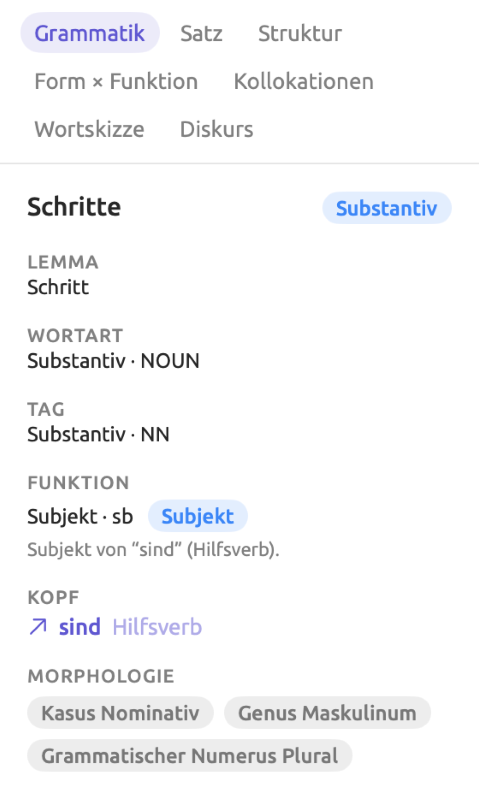
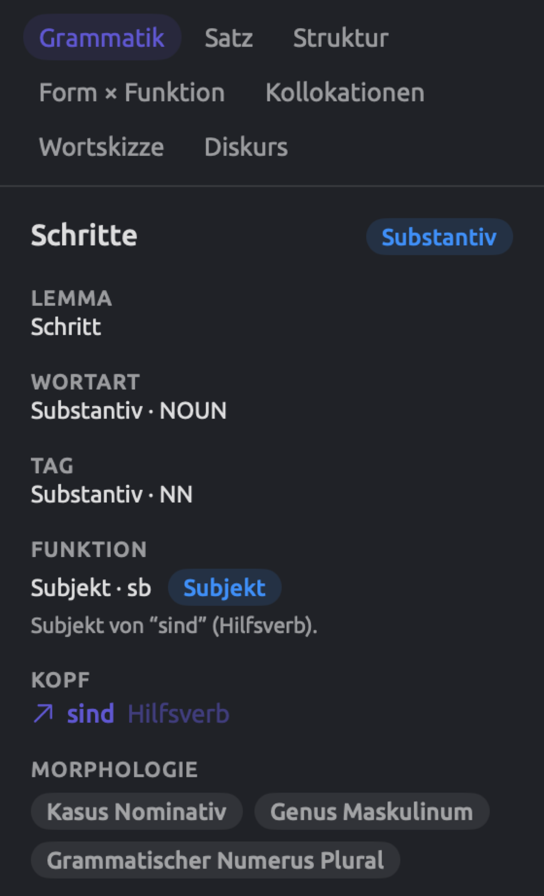
Die Quellen der Analyse
Die Analyse stammt von statistischen Modellen, also von Modellen des maschinellen Lernens, die an großen Textmengen trainiert wurden, um für jedes Wort und jeden Satz eines Dokuments die wahrscheinlichste Analyse zu wählen. Für jede der drei Sprachen gibt es eigene Modelle, und alle werden mit LemmaLoom geliefert. Unter LemmaLoom ▸ Über LemmaLoom finden Sie die Lizenzen von LemmaLoom; der Abschnitt Lizenzen nennt die Urheber und die Lizenzbedingungen der enthaltenen Modelle (siehe Lizenzen in Kapitel 26, Hilfe und Support).
Diese Modelle machen manchmal Fehler. Sie wurden überwiegend an geschriebenen Texten trainiert. Deshalb ist die Analyse bei transkribierten Dokumenten, bei Dialekten und bei Text, der beim Auslesen eines PDFs beschädigt wurde, weniger zuverlässig. Die chinesische Analyse macht mehr Fehler als die englische und die deutsche, weil die Modelle chinesische Wörter erst finden müssen, bevor sie sie analysieren können.
Die eingebauten Analysatoren
Drei Analysatoren gehören zu LemmaLoom und verarbeiten Dokumente in allen drei Sprachen:
| Analysator | Was er annotiert |
|---|---|
| Kohäsion | Wie jeder Satz an das Vorangehende anknüpft, durch ein Pronomen, ein Possessivum, ein Demonstrativum wie dieser, ein wiederholtes Wort oder, im Chinesischen, ein ausgelassenes Subjekt. Ein Satz ohne einen solchen Bezug eröffnet ein neues Thema. |
| Metadiskurs | Wörter, mit denen Sprechende oder Schreibende ihr Publikum lenken, nämlich Abschwächer (vielleicht), Verstärker (eindeutig), Einstellungsmarker (leider), Konnektoren (jedoch) und Wörter, die das Publikum einbeziehen (wir, bedenken). Im Deutschen kommen Modalpartikeln wie ja und doch hinzu, im Chinesischen Satzschlusspartikeln wie 吗 und 吧. |
| Rhetorik | Rhetorische Mittel wie Passiv, Nominalisierung (eine Handlung, die zum Substantiv geworden ist, Entscheidung für entscheiden), Parallelismus, vorangestellte Eröffnungen (eine Wendung vor dem Subjekt), periodische Sätze (das Hauptverb erst am Ende), Fragen und Aufforderungen sowie Sätze, die mit denselben Wörtern beginnen. |
Die eingebauten Analysatoren bieten einen einfachen Einstieg in Fragen danach, wie ein bestimmter Text aufgebaut ist. Sie können zum Beispiel zeigen, wie oft jemand abschwächend formuliert oder wo ein Sprecher zu einem ganz anderen Thema übergeht. Ihre Ergebnisse erscheinen in den gleichnamigen Lenses (siehe Kapitel 6, Lenses) und in der Facette Diskurs des Tabs Grammatik (siehe Kapitel 11, Der Grammatik-Inspektor). Auch Abfragen, die Befunde liefern (siehe Kapitel 15, Eine Abfrage erstellen), können auf diese Analysatoren zugreifen. Eigene Analysatoren, die Sie unter Fenster ▸ Analysatoren entwickeln, laufen neben den eingebauten, und zwar auf Dokumenten in den Sprachen, die Sie für sie festgelegt haben (siehe Kapitel 20, Eigene Analysatoren).
Statistiken und Zählungen
Sobald LemmaLoom ein Dokument fertig indiziert hat, zählt es seine Sätze und Tokens. Der Tab Text im Inspektor des Dokuments nennt die Zahl der Sätze und berechnet Wortzahlen, Lesbarkeit und Wortschatzstatistiken (siehe Kapitel 10, Der Text-Inspektor). Bis der erste Teil des Dokuments indiziert ist, zeigt der Tab Text den Hinweis Statistiken werden verfügbar, sobald die Indizierung abgeschlossen ist.
LemmaLoom kennt im Wesentlichen zwei Zählungen:
- Eine Zählung von Tokens schließt alle Satzzeichen und Symbole ein. Wenn Sie in einem intelligenten Set eine Bedingung oder in einer Abfrage eine Regel anlegen, richtet sich das Feld Token nach dieser Zählung. Auch die Statusleiste der Leseansicht zeigt die Zahl der Tokens, beschriftet mit Wörter.
- Eine Zählung von Wörtern lässt Satzzeichen und Symbole weg, zählt aber neben gewöhnlichen Wörtern alle Zahlen und Zahlwörter mit. Der Tab Text verwendet die Wortzahl, ebenso das Maß Pro 10.000 Wörter in Abfragen (siehe Maße in Kapitel 16, Abfrageergebnisse und Statistik).
Der Beispielsatz aus „Uns läuft die Zeit davon“ hat sieben Tokens (sechs Wörter und den Punkt). Verschmelzungen wie am bilden ein einziges Wort, ebenso Zahlen wie 2050. In chinesischen Texten zählt LemmaLoom die Wörter, die es bei der Indizierung gefunden hat.
Vor der Indizierung haben die Felder Token und Sätze eines Dokuments in Abfragen und intelligenten Sets den Wert 0. Bei Dokumenten in anderen Sprachen (etwa Französisch) bleiben beide Werte immer 0. Ein intelligentes Set der Dokumente mit weniger als 1.000 Token enthält deshalb auch alle nicht indizierten Dokumente. Wenn Sie ein vorhandenes Dokument bearbeiten, behalten die beiden Felder ihre letzten bekannten Werte, bis die Indizierung abgeschlossen ist. Das Feld Zeichen ergibt sich direkt aus dem Inhalt des Dokuments und wird sofort berechnet. Wenn Sie Dokumente, deren Indizierung noch aussteht, nach ihrer Länge sortieren oder vergleichen möchten, wählen Sie stattdessen Zeichen.
Von der Analyse ausgeschlossener Text
Muster unter Von der Indizierung ausschließen, im Importdialog oder in den Dokumenteigenschaften, verhindern, dass passender Text analysiert wird (siehe Text von der Indizierung ausschließen in Kapitel 4, Material importieren). Dazu gehören etwa Zeitstempel, Sprecherkennzeichnungen sowie Kopf- und Fußzeilen. LemmaLoom ersetzt jede passende Textstelle durch Leerraum, bevor es den Text indiziert; so fließen diese Teile nicht in Wortzahlen, Schlüsselwortlisten, Wortskizzen und die eingebauten Lenses ein.
Ausgeschlossenen Text sehen Sie weiterhin in der Leseansicht, Sie können ihn kodieren, und die Suchleiste durchsucht ihn. Auch eine Abfrage mit der Einheit Texttreffer durchsucht ihn, wenn das erste Menü ihrer Textzeile auf der Voreinstellung Text steht, denn dann liest die Abfrage den Text selbst. Stellen Sie dieses Menü auf Wort, Wortform oder Lemma, vergleicht die Abfrage stattdessen Tokens und überspringt deshalb ausgeschlossenen Text.
Was jede Sprache unterstützt
Für alle drei Sprachen gibt es Tokenisierung, Satzerkennung, Wortklassen, Tags, Lemmata, Dependenzen, Phrasenstruktur, Nominalgruppen, Stoppwörter und alle drei eingebauten Analysatoren. Unterschiede gibt es in den Einzelheiten:
| Englisch | Deutsch | Chinesisch | |
|---|---|---|---|
| Zerlegung des Textes in Wörter | An Leerzeichen und Satzzeichen; don’t wird zu do und n’t | An Leerzeichen und Satzzeichen | Durch ein Modell, das die Wörter findet, da sie nicht durch Leerzeichen getrennt sind |
| Tags | Penn Treebank | STTS (Stuttgart-Tübingen-Tagset) | Penn Chinese Treebank |
| Dependenzbezeichnungen | Englische Bezeichnungen wie nsubj und dobj | TIGER-Bezeichnungen wie sb (Subjekt) und oa (Akkusativobjekt, das direkte Objekt) | Die englischen Bezeichnungen, dazu chinesische wie aux:asp für Aspektmarker wie 了 |
| Phrasenbezeichnungen | Penn Treebank, etwa NP und PP | TIGER, etwa NP und PP | Penn Chinese Treebank |
| Lens Morphologie | Tempus, Numerus, Steigerung (Komparativ, Superlativ), Verbform | Dieselben, dazu Kasus, Modus und Genus | Nicht angeboten |
| Kategorien in Metadiskurs | Fünf | Die fünf, dazu Modalpartikel | Die fünf, dazu Satzschlusspartikel |
| Mittel in Rhetorik | Alle dreizehn | Alle außer Absolute Konstruktion | Alle außer Periodischer Satz und Absolute Konstruktion |
| Lenses nur für diese Sprache | Keine | Satzfelder (siehe Satzfelder (Deutsch) in Kapitel 6, Lenses) | Konstruktionen und Partikeln (siehe Konstruktionen und Partikeln (Chinesisch) in Kapitel 6, Lenses) |
Penn Treebank, Penn Chinese Treebank, STTS und TIGER sind Standardschemata für die Annotation, und die Modelle wurden an Texten trainiert, die nach ihnen annotiert sind.
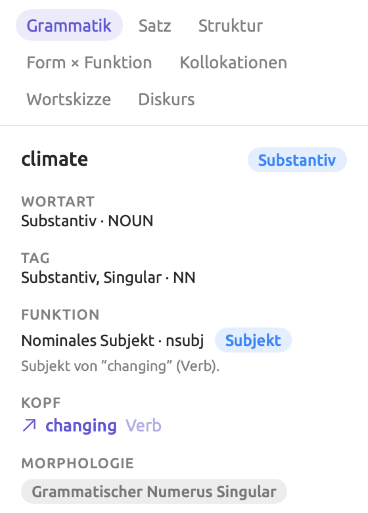
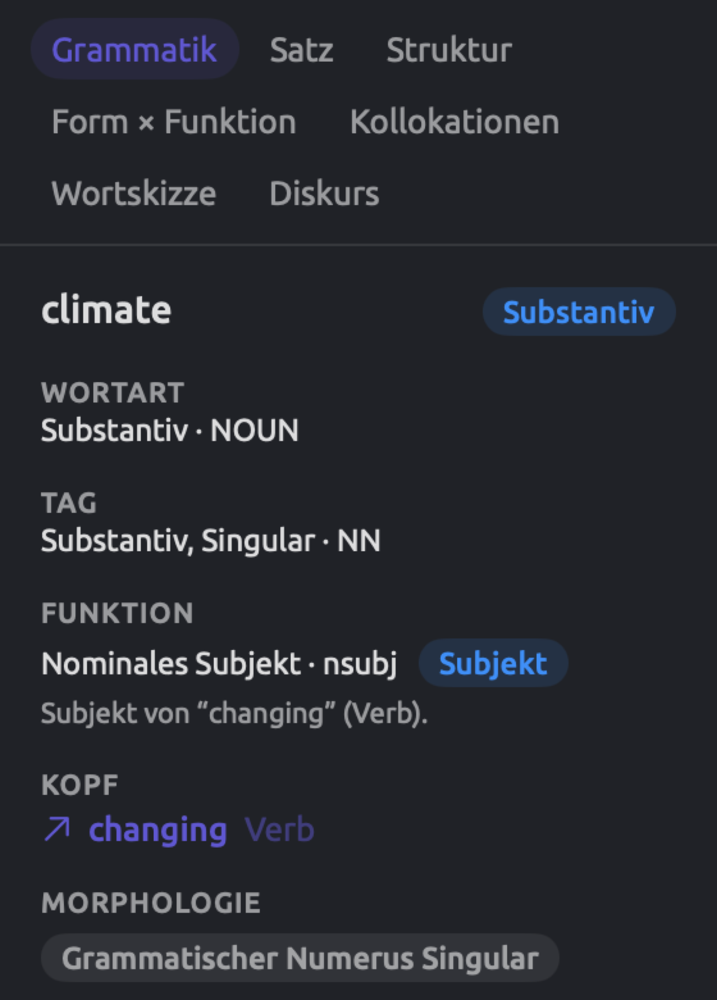
Chinesische Wörter haben nur eine Form; das Lemma eines chinesischen Wortes ist deshalb immer das Wort selbst.
Die Stoppwörter, die bei der Indizierung erkannt werden, gehen in den Stoppwort-Anteil im Tab Text und in das Feld Stoppwort für Wörter in Abfragen ein; die Facette Kollokationen des Tabs Grammatik lässt Stoppwörter aus. Die Stoppwortlisten gehören fest zu LemmaLoom und umfassen 162 Stoppwörter für Englisch, 211 für Deutsch und 153 für Chinesisch. Stimmt die Form oder das Lemma eines Tokens mit einem Eintrag auf einer dieser Listen überein, ohne Rücksicht auf Groß- und Kleinschreibung, ist es ein Stoppwort. Da die Listen fest vorgegeben sind, können Sie in Abfragen eigene Regeln festlegen, um weitere Wörter auszulassen.
Hilfe ▸ Glossar beschreibt ausführlich jedes Tag, jede Dependenzbezeichnung und jede Phrasenbezeichnung, die LemmaLoom verwendet. Wählen Sie in der Seitenleiste von Hilfe ▸ Glossar eine Kategorie (etwa Wortart-Tags, Dependenzrelationen, Phrasenbezeichnungen oder Morphologie) und suchen Sie dann im Feld Suchen über der Liste. Ein Eintrag mit der Kennzeichnung EN, DE oder ZH gilt nur für Englisch, Deutsch beziehungsweise Chinesisch; andernfalls gilt die Definition für alle drei Sprachen. Jedes Wortart-Tag, jede Dependenzbezeichnung und jede Phrasenbezeichnung, die Lenses farbig hervorheben, erscheint auch in Hilfe ▸ Glossar in denselben Farben. Halten Sie den Mauszeiger auf einen solchen Eintrag, um zu sehen, welche Lens das Tag, die Dependenzbezeichnung oder die Phrasenbezeichnung verwendet.
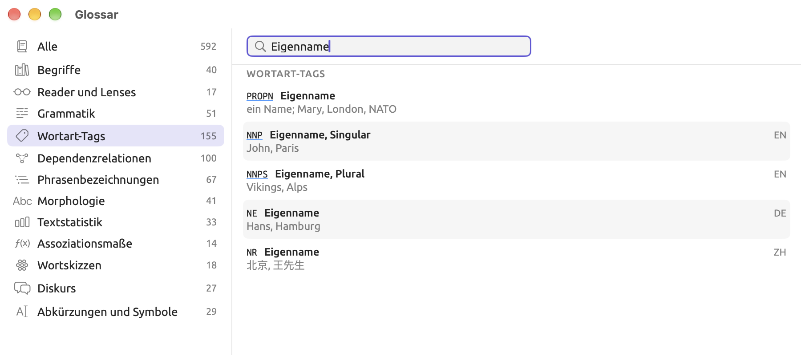
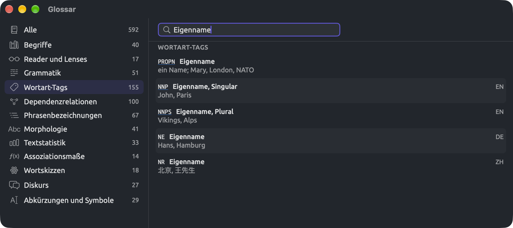
Wie LemmaLoom die Sprache bestimmt
Die Sprache, festgelegt im Importdialog oder in den Dokumenteigenschaften, bestimmt, mit welchen Modellen das Dokument indiziert wird. In der Seitenleiste erscheint die Sprache hinter dem Namen des Dokuments als Kürzel wie EN, DE oder ZH; halten Sie den Mauszeiger auf das Kürzel, um den vollen Namen zu sehen.
Steht Sprache auf Automatisch, erkennt LemmaLoom die Sprache an den ersten 4.096 Zeichen des Dokumenttextes. Bei einer Aufnahme richtet sich LemmaLoom nach der Sprache der Transkription, sofern diese bekannt ist; andernfalls liest es den Text des Dokuments. Das geschieht beim Import und jedes Mal, wenn Sie Sprache wieder auf Automatisch stellen und sichern. Bei Dokumenten in einem Projekt, das im REFI-QDA-Format importiert wurde, wird die Sprache auf dieselbe Weise erkannt.
Manchmal hält LemmaLoom eine der drei unterstützten Sprachen für eine andere und analysiert die Dokumente nach dem Import dann mit den falschen Modellen. Prüfen Sie nach einem großen Import die Sprachkürzel in der Seitenleiste. Wählen Sie die Sprache selbst, wenn der Anfang eines Dokuments nicht für das ganze Dokument steht oder wenn LemmaLoom die Sprache falsch erkannt hat. Meldet LemmaLoom zum Beispiel Keine Grammatikanalyse für Spanisch bei einem englischsprachigen Blogbeitrag, stellen Sie in den Dokumenteigenschaften die Sprache auf Englisch und klicken Sie auf Sichern.
Ein Dokument wird immer durchgehend in einer einzigen Sprache indiziert. Textabschnitte in einer anderen Sprache, etwa fremdsprachige Zitate, werden trotzdem mit den Modellen der Hauptsprache analysiert und liefern unzuverlässige Ergebnisse.
Bei Übersetzungen bestimmt die Zielsprache die Sprache. „Uns läuft die Zeit davon (Englisch)“ wird deshalb mit den englischen Modellen analysiert. Übersetzungen werden zunächst mit allen Analysatoren ihrer Sprache und mit leerem Feld Von der Indizierung ausschließen indiziert, gleich welche Einstellungen das Original verwendet; jede Einstellung können Sie in den Dokumenteigenschaften ändern.
Andere Sprachen
Dokumente in jeder anderen Sprache (Französisch, Spanisch und so weiter) importiert LemmaLoom als reinen Text. Das Kennzeichen eines solchen Dokuments in der Seitenleiste ist ein Fragezeichen, und wenn Sie den Mauszeiger darauf halten, erscheint Sprache wird für die Indizierung nicht unterstützt. In der Leseansicht meldet die Statusleiste unten Keine Grammatikanalyse für Französisch, wobei an der Stelle von Französisch die jeweilige nicht unterstützte Sprache steht. Sie können solche Dokumente trotzdem lesen, durchsuchen, bearbeiten und kodieren und in jeder Ansicht verwenden, die ohne die Analyse auskommt (siehe Was ohne die Analyse verfügbar ist weiter unten in diesem Kapitel).
Die Indizierung verfolgen
Die Indizierung läuft für alle Ihre Projekte, gleich welches gerade geöffnet ist. LemmaLoom indiziert bis zu drei Dokumente gleichzeitig oder bis zu drei Teile eines Dokuments auf einmal; alles andere wird der Reihe nach indiziert. Wenn Sie LemmaLoom beenden, bevor die Indizierung abgeschlossen ist, setzt es die verbleibende Indizierung beim nächsten Start fort.
LemmaLoom lädt die Modelle einer Sprache in den Arbeitsspeicher, sobald es das erste Dokument in dieser Sprache analysieren muss, und entlädt sie etwa anderthalb Minuten, nachdem das letzte Dokument fertig ist.
In der Seitenleiste
Ein kleines Kennzeichen hinter dem Namen und dem Sprachkürzel eines Dokuments in der Seitenleiste zeigt seinen Indexstatus. Halten Sie den Mauszeiger auf das Kennzeichen, um die Bezeichnung des Status zu sehen. Diese Status stehen in intelligenten Sets und Abfragen auch über das Feld Indexstatus zur Verfügung.
| Kennzeichen | Indexstatus | Bedeutung |
|---|---|---|
| Kein Kennzeichen | Indiziert | Das Dokument ist indiziert. |
| Fortschrittsring; der Name ist grau | Indizierung | Das Dokument wird gerade indiziert. Der Tooltip zeigt Schritt und Prozentangabe, etwa Struktur wird ermittelt 35 %. |
| Fortschrittsring oder Aktivitätsanzeige | Analysator läuft | Ein Analysator, den Sie mit Ausführen in den Dokumenteigenschaften gestartet haben, läuft auf dem Dokument. Der Tooltip lautet zum Beispiel Kohäsion läuft. |
| Gepunkteter Kreis | Nicht indiziert | Das Dokument wartet in der Warteschlange (Wartet auf Indizierung). |
| Pausenzeichen | Übersprungen | Für dieses Dokument gilt Indizierung ist aus, weil es ohne Indizierung importiert wurde (siehe Ohne Indizierung importieren weiter unten). |
| Fragezeichen | Nicht unterstützt | Das Dokument ist in einer anderen Sprache (Sprache wird für die Indizierung nicht unterstützt). |
| Rotes Warndreieck | Fehlgeschlagen | Die Indizierung ist fehlgeschlagen. Der Tooltip nennt den Grund (siehe Wenn die Indizierung fehlschlägt weiter unten). |
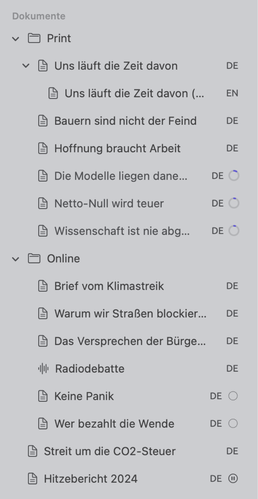
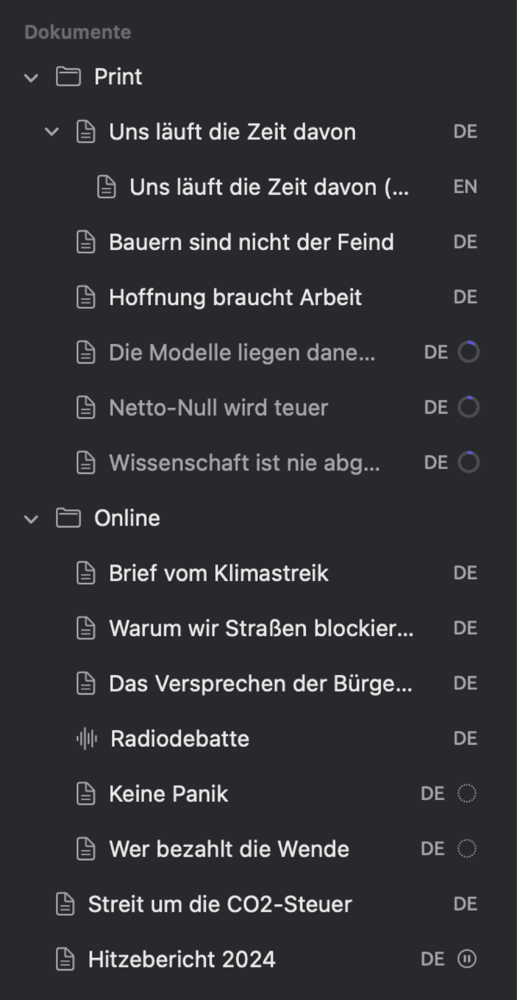
In der Leseansicht
Die Zahlen eines Dokuments, etwa die Zahl seiner Absätze, Sätze und Tokens, stehen ganz rechts in der Statusleiste der Leseansicht. Welche Zahlen erscheinen, hängt davon ab, was die Randspalte zeigt (siehe Die Statusleiste in Kapitel 5, Lesen und Bearbeiten). Bei „Uns läuft die Zeit davon“ zeigt die Statusleiste zum Beispiel 10 ¶ · 66 S · 1.084 Wörter. Bis die Indizierung abgeschlossen ist und während ein Analysator läuft, den Sie mit Ausführen gestartet haben, zeigt die Statusleiste stattdessen eine dieser Angaben:
- Schritt und Prozentangabe, etwa Struktur wird ermittelt 35 %, zusammen mit einem Fortschrittsring;
- Indizierung mit einer Aktivitätsanzeige, solange das Dokument wartet, bis es an der Reihe ist (in der Seitenleiste Wartet auf Indizierung);
- den Namen eines Analysators mit läuft dahinter, bei einem großen Dokument gefolgt von der Prozentangabe, etwa Rhetorik läuft;
- Indizierung ist aus mit einem Link Jetzt indizieren bei einem Dokument, das ohne Indizierung hinzugefügt wurde;
- Keine Grammatikanalyse für, gefolgt von der Sprache;
- den Grund für den Fehlschlag, gefolgt von einem Link Indizierung wiederholen, bei einem Dokument, dessen Indizierung fehlgeschlagen ist.
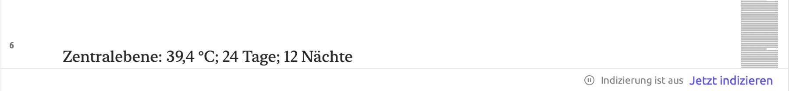
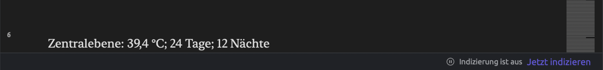
Auch andere Teile der Leseansicht warten auf die Indizierung (siehe Bevor die Indizierung abgeschlossen ist in Kapitel 5, Lesen und Bearbeiten).
Im Fenster „Aktivität“
Fenster ▸ Aktivität (⌥⌘0) zeigt, was in allen Projekten im Hintergrund geschieht (siehe Das Fenster „Aktivität“ in Kapitel 4, Material importieren). Diese Abschnitte des Fensters Aktivität betreffen die Indizierung:
- Indizierung listet die Dokumente, die gerade indiziert werden, mit Schritt und Prozentangabe, sowie die Dokumente, auf denen gerade ein bestimmter Analysator läuft, etwa Metadiskurs läuft 40 %.
- Fehlgeschlagen listet die Dokumente, deren Indizierung fehlgeschlagen ist, mit dem Grund und einem Link Indizierung wiederholen für einen neuen Versuch.
- Wartend listet schließlich die Dokumente, die in der Warteschlange warten, bis sie an der Reihe sind, jeweils mit dem Status Wartet auf Indizierung.
Jede Zeile nennt das zugehörige Projekt; im Fenster Aktivität verfolgen Sie deshalb die Indizierung in anderen Projekten als dem aktiven.
Dokumente nach ihrem Indexstatus finden
Die Mitglieder eines intelligenten Sets ändern sich von selbst, sobald Dokumente fertig indiziert sind. Nach einem Import vieler Dokumente kann Ihnen ein intelligentes Set deshalb zeigen, welche Dokumente noch nicht bereit sind. So legen Sie ein solches Set an:
- Wählen Sie Projekt ▸ Neues intelligentes Set oder klicken Sie in der Seitenleiste am Ende des Abschnitts Sets auf Neues intelligentes Set.
- Geben Sie dem Set im Dialog, der sich öffnet, einen Namen.
- Wählen Sie in der Bedingungszeile im Menü, das Attribut oder Tags zeigt, den Eintrag Indexstatus.
- Wählen Sie im Menü, das ist eines von zeigt, den Eintrag ist keines von.
- Öffnen Sie das Wertemenü, das Keine anzeigt, und wählen Sie Indiziert.
- Klicken Sie auf Sichern.
Während Sie die Kriterien ändern, zeigt die Zahl unter den Bedingungen, wie viele Dokumente zum Set gehören. Das Set kann auch Dokumente in anderen Sprachen enthalten und vorübergehend Dokumente, auf denen gerade ein Analysator läuft, den Sie mit Ausführen gestartet haben. Wenn Sie nur die Dokumente sehen möchten, um die Sie sich kümmern müssen, wählen Sie stattdessen ist eines von mit Fehlgeschlagen, Übersprungen und Nicht unterstützt.
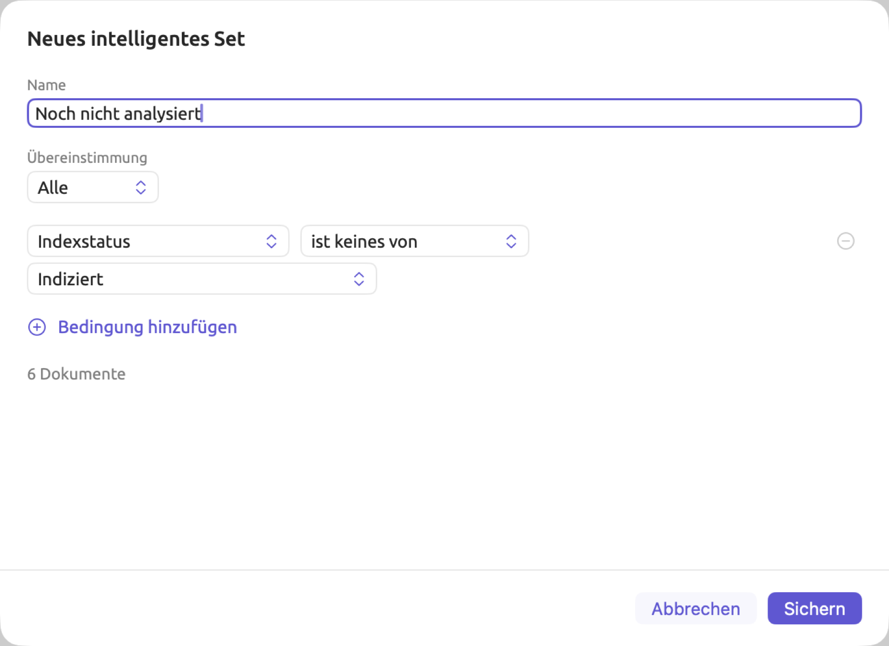
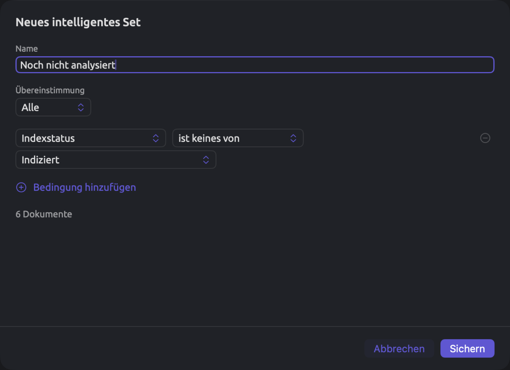
Das Feld Indexstatus gehört in Abfragen zur Einheit Dokumente. Intelligente Sets und Abfragen haben außerdem das Feld Indizierung übersprungen, das angibt, ob ein Dokument ohne Indizierung importiert wurde und noch auf Jetzt indizieren wartet. Mehr über intelligente Sets erfahren Sie in Kapitel 8, Sets, Gruppen, Tags und Attribute.
Wenn die Indizierung fehlschlägt
Schlägt die Indizierung eines Dokuments fehl, ersetzt ein rotes Warndreieck das Kennzeichen neben dem Dokument in der Seitenleiste. Das Dokument erscheint außerdem im Abschnitt Fehlgeschlagen des Fensters Aktivität. Die Ursache erscheint, wenn Sie den Mauszeiger auf das Symbol halten, im Kontextmenü des Dokuments in der Seitenleiste und in der Statusleiste der Leseansicht. Gibt es keine genauere Angabe, lautet der Grund Die Indizierung dieses Dokuments ist fehlgeschlagen.
Mit Indizierung wiederholen können Sie die Indizierung jederzeit erneut versuchen. Den Befehl finden Sie an diesen Stellen:
- im Kontextmenü des Dokuments in der Seitenleiste;
- in der Statusleiste der Leseansicht;
- in der Zeile des Dokuments im Abschnitt Fehlgeschlagen des Fensters Aktivität.
LemmaLoom indiziert dann die Teile des Dokuments, denen die Analyse fehlt, und lässt seine Analysatoren erneut laufen. Von selbst versucht LemmaLoom es beim Start erneut und, sobald es lange genug gewartet hat, auch beim nächsten Mal, wenn es irgendein Dokument indiziert. Die Wartezeit beginnt bei einer Minute und verdoppelt sich mit jedem Fehlschlag, bis sie eine Stunde erreicht.
Schlägt die Indizierung desselben Dokuments mehrmals fehl, prüfen Sie seine Eigenschaft Sprache in den Dokumenteigenschaften. Suchen Sie in der Leseansicht nach Textteilen, die eigentlich kein Text sind (etwa zufällige Zeichen aus einer beschädigten PDF-Datei), und korrigieren Sie sie oder schließen Sie sie aus. Hilft nichts davon, melden Sie das Problem über Hilfe ▸ Feedback senden (siehe Kapitel 26, Hilfe und Support).
Ohne Indizierung importieren
Sie können ein Dokument importieren, ohne es zu indizieren, und es später indizieren lassen. Das bietet sich etwa an bei einer großen Zahl von Dokumenten, wenn Ihr Mac jetzt für anderes frei bleiben soll, bei einem PDF, dessen ausgelesenen Text Sie vor der Indizierung erst korrigieren müssen, und bei Dokumenten, die Sie nur lesen und kodieren werden.
So importieren Sie Dokumente ohne Indizierung:
- Importieren Sie das Dokument wie gewohnt (siehe Kapitel 4, Material importieren).
- Entfernen Sie im Teil Indizierung des Dialogs Dokument importieren oder Aus dem Web importieren das Häkchen bei Für die Grammatikanalyse indizieren. Die Liste Analysatoren darunter ist deaktiviert.
- Klicken Sie auf Importieren.
Für jede importierte Datei erscheint ein eigener Dialog, und in jedem ist das Markierungsfeld zunächst aktiviert. Um mehrere Dateien ohne Indizierung zu importieren, entfernen Sie das Häkchen in jedem Dialog.
Ein solches Dokument kommt nicht in die Warteschlange, auch wenn sich sein Inhalt später ändert. Sein Lens-Menü bleibt deaktiviert, und der Tab Grammatik zeigt Die Grammatik wird verfügbar, sobald die Indizierung abgeschlossen ist.
Um das Dokument zu indizieren, klicken Sie in der Statusleiste der Leseansicht auf Jetzt indizieren oder öffnen Sie die Dokumenteigenschaften und klicken Sie dort auf Jetzt indizieren. Die Dokumenteigenschaften öffnen Sie, indem Sie das Dokument in der Seitenleiste auswählen und Projekt ▸ Eigenschaften wählen oder mit der rechten Maustaste auf das Dokument klicken und Eigenschaften wählen. Dort steht Jetzt indizieren oben im Teil Indizierung, neben Indizierung ist aus. Die Schaltfläche wirkt sofort.
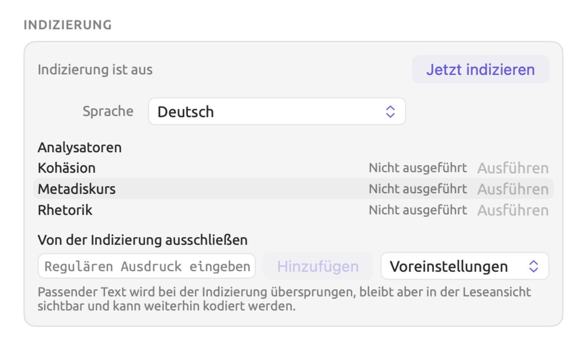
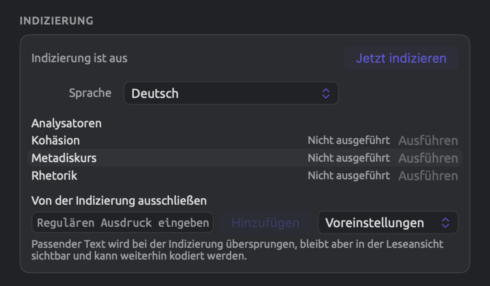
Danach kommt das Dokument in die Warteschlange. Haben Sie versehentlich auf Jetzt indizieren geklickt, setzt Bearbeiten ▸ Jetzt indizieren widerrufen (⌘Z) das Dokument auf den vorherigen Status Indizierung ist aus zurück. Ist die Indizierung bis dahin schon abgeschlossen, behält das Dokument seine Analyse.
Analysatoren für ein Dokument wählen
Bei der Indizierung laufen auf einem Dokument alle Analysatoren, die seine Sprache verarbeiten. Sie können einen Analysator jederzeit für einzelne Dokumente ausschließen, entweder beim Import oder später, indem Sie seine Befunde in den Dokumenteigenschaften löschen. Einen Analysator auszuschließen bietet sich an, wenn er nicht zum Inhalt passt. Rhetorik zum Beispiel erkennt Mittel wie Nominalisierung und periodische Sätze; da diese typisch für geschriebene Prosa sind, möchten Sie ihn beim Dokument „Radiodebatte“, dem Transkript einer Aufnahme, vielleicht ausschließen. Schließen Sie ihn bei allen Transkripten aus, zählt eine Abfrage mit der Einheit Befunde über das ganze Projekt rhetorische Mittel nur in den geschriebenen Dokumenten.
Wenn Sie einen Analysator für ein Dokument ausschließen, geschieht Folgendes:
- Alle Befunde des Analysators in diesem Dokument werden entfernt;
- die Lens dieses Analysators verschwindet aus dem Lens-Menü des Dokuments;
- in der Facette Diskurs des Tabs Grammatik finden Sie für das Dokument Hinweise wie Keine rhetorischen Mittel;
- wenn Sie einen selbst erstellten Analysator zum automatischen Kodieren verwenden, überspringt Automatisch kodieren… alle Dokumente, für die der Analysator zuvor ausgeschlossen wurde.
Analysatoren beim Import wählen
Im Teil Indizierung des Importdialogs stehen die Analysatoren mit Markierungsfeldern unter Analysatoren. Zuerst kommen die eingebauten, dann Ihre eigenen in alphabetischer Reihenfolge. Steht Sprache auf Automatisch, erscheinen alle Analysatoren in der Liste; andernfalls nur die, die Dokumente in der gewählten Sprache verarbeiten können. Anfangs sind alle aktiviert; entfernen Sie das Häkchen bei denen, die Sie für dieses Dokument nicht verwenden möchten.
Die Analysatorliste in den Dokumenteigenschaften
So sehen oder ändern Sie die Analysatoren eines Dokuments, das bereits in Ihrem Projekt ist:
- Wählen Sie das Dokument in der Seitenleiste aus und wählen Sie Projekt ▸ Eigenschaften, oder klicken Sie mit der rechten Maustaste darauf und wählen Sie Eigenschaften.
- Scrollen Sie nach unten zum Teil Indizierung. Analysatoren listet die Analysatoren auf, die die Sprache des Dokuments verarbeiten. Bei einem Dokument in einer anderen Sprache stehen dort alle, und Ausführen ist deaktiviert.
Jede Zeile zeigt den Status des Analysators:
| Status | Bedeutung |
|---|---|
| Fertig | Der Analysator ist in seiner aktuellen Version über das ganze Dokument gelaufen. Auch ein Analysator, der gelaufen ist und nichts gefunden hat, ist Fertig. |
| Veraltet | Der Analysator ist nur über einen Teil des Dokuments oder in einer früheren Version gelaufen. Dieser Status hält meist nur kurz an, weil LemmaLoom den Analysator von selbst auf den neuesten Stand bringt (siehe Wann Analysatoren erneut ausgeführt werden weiter unten). |
| Nicht ausgeführt | Der Analysator ist auf diesem Dokument nicht gelaufen, weil er ausgeschlossen wurde, weil das Dokument noch nicht indiziert ist oder weil der Analysator bei der Indizierung mit einem Fehler abgebrochen ist. |
| Läuft | Der Analysator läuft gerade. Bei einem langen Dokument zeigt ein Fortschrittsring, wie weit er ist. |
| Fehlgeschlagen | Der Analysator ist mit einem Fehler abgebrochen, nachdem Sie auf Ausführen geklickt haben. Halten Sie den Mauszeiger auf Fehlgeschlagen, um den Fehler zu lesen. |
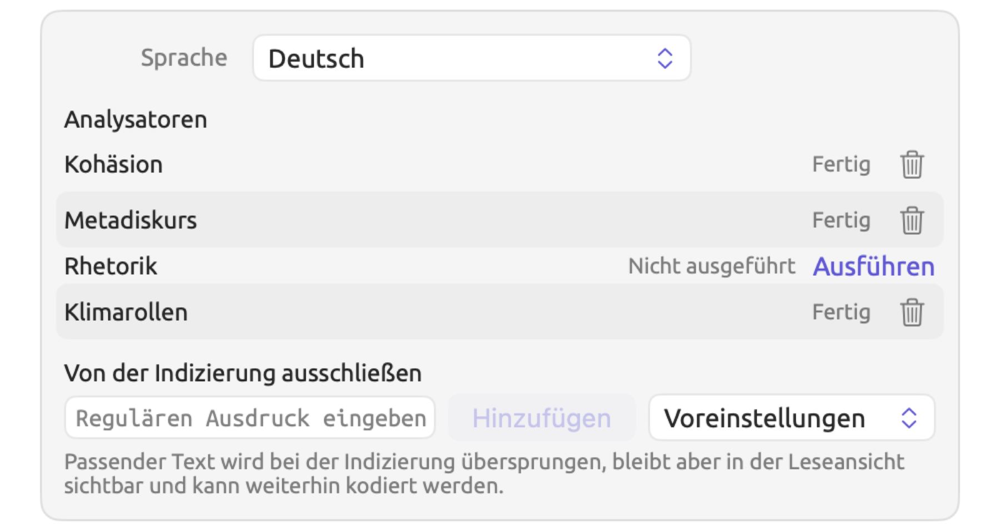
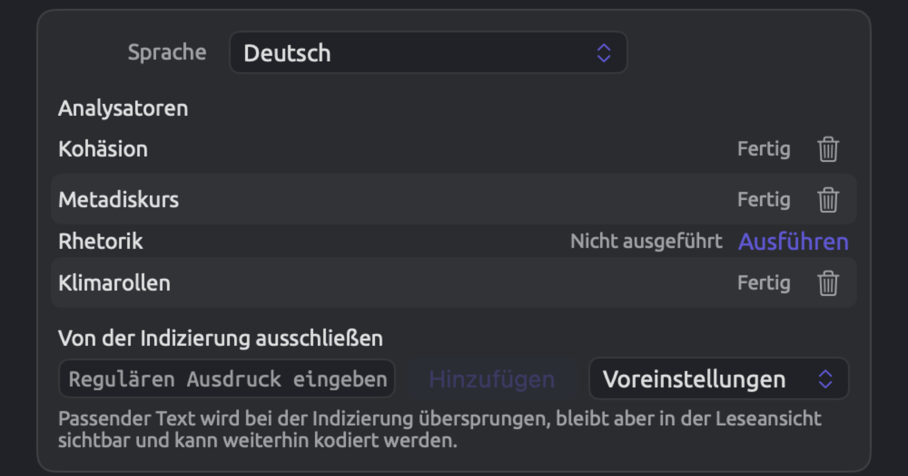
Ein Klick auf einen Link Ausführen oder auf eine Schaltfläche mit dem Papierkorb in dieser Liste wirkt sofort, auch wenn Sie danach auf Abbrechen klicken.
Die Ausgabe eines Analysators entfernen
Wenn Sie die Ausgabe eines Analysators entfernen, löscht LemmaLoom seine Befunde und schließt den Analysator von da an für dieses Dokument aus.
- Öffnen Sie die Dokumenteigenschaften des Dokuments und scrollen Sie zu Indizierung.
- Klicken Sie in der Zeile des Analysators auf die Schaltfläche mit dem Papierkorb. Wenn Sie den Mauszeiger darauf halten, erscheint Ausgabe entfernen. Die Schaltfläche gibt es nur bei Analysatoren mit dem Status Fertig oder Veraltet.
Die Zeile wechselt nun zu Nicht ausgeführt. Wird das Dokument erneut indiziert (etwa nach einer Änderung), bleibt der Analysator entfernt. Mit Bearbeiten ▸ Ausgabe entfernen widerrufen (⌘Z) machen Sie das Entfernen rückgängig; der Analysator wird wiederhergestellt und läuft erneut. Wenn Sie ihn später wieder ausführen möchten, klicken Sie in derselben Zeile auf Ausführen.
Einen Analysator ausführen
- Öffnen Sie die Dokumenteigenschaften des Dokuments und scrollen Sie zu Indizierung.
- Klicken Sie in der Zeile des Analysators auf Ausführen. Der Link erscheint bei Analysatoren, deren Status nicht Fertig ist.
War der Analysator für das Dokument ausgeschlossen, wird er wieder hinzugefügt, und er läuft sofort, gestützt auf die vorhandene Analyse. Während er läuft, zeigt seine Zeile Läuft, und auch das Kennzeichen in der Seitenleiste, die Statusleiste der Leseansicht und das Fenster Aktivität zeigen es an, etwa mit Rhetorik läuft. War der Analysator für das Dokument ursprünglich ausgeschlossen, schließt Bearbeiten ▸ Ausführen widerrufen (⌘Z) ihn wieder aus und entfernt die Ergebnisse des Laufs.
Ausführen ist deaktiviert, solange die Indizierung nicht abgeschlossen ist, und bei einem Dokument, das ohne Indizierung importiert wurde. Wenn Sie den Mauszeiger darauf halten, erscheint entsprechend Noch nicht indiziert oder Indizierung ist aus.
Zeigt einer Ihrer eigenen Analysatoren in einem vollständig indizierten Dokument Nicht ausgeführt, obwohl er nie ausgeschlossen wurde, ist er wahrscheinlich bei der Indizierung mit einem Fehler abgebrochen. Mit Ausführen können Sie es erneut versuchen. Schlägt der Lauf fehl, steht der Analysator auf Fehlgeschlagen. Wenn Sie den Mauszeiger auf Fehlgeschlagen halten, sehen Sie die zugehörige Fehlermeldung. Dem Fehler können Sie dann unter Fenster ▸ Analysatoren nachgehen (siehe Kapitel 20, Eigene Analysatoren).
Wann Analysatoren erneut ausgeführt werden
Ausführen ist meist nicht nötig, weil LemmaLoom die Analysatoren von selbst erneut laufen lässt. Das geschieht in zwei Fällen: wenn Ihr Dokument erneut indiziert wird (siehe Ein Dokument erneut indizieren) und wenn Sie unter Fenster ▸ Analysatoren einen eigenen Analysator hinzufügen oder entfernen, seinen Code oder seine Sprachen ändern oder die Schlüssel seiner Legende bearbeiten.
Im zweiten Fall lässt LemmaLoom den Analysator in allen Projekten erneut über jedes Dokument in seinen Sprachen laufen, außer über Dokumente, deren frühere Ergebnisse Sie gelöscht haben. Nur die Analysatoren laufen erneut, deshalb geht das viel schneller als eine vollständige Indizierung. Da alle betroffenen Dokumente in dieser Zeit den Status Indizierung haben, erscheinen ihre Namen in der Seitenleiste grau und mit einem Fortschrittsring, und in den Dokumenteigenschaften kann die Zeile des Analysators Veraltet zeigen, bis er fertig ist.
Zeigt die Zeile eines Analysators unter Fenster ▸ Analysatoren Veraltet, bedeutet das etwas anderes. Dort heißt Veraltet, dass der Analysator aus einer Abfrage stammt, die inzwischen geändert wurde. Sichern Sie den Analysator erneut aus der geänderten Abfrage, um das zu beheben (siehe Kapitel 18, Abfrageergebnisse nutzen).
Was ohne die Analyse verfügbar ist
Viele Funktionen von LemmaLoom stützen sich nur auf den Text und Ihre Annotationen; sie funktionieren deshalb in jedem Dokument, ob indiziert oder nicht:
| Bereich | Funktioniert ohne die Analyse |
|---|---|
| Leseansicht | Lesen, die Suchleiste, Textstellen auswählen, den Text bearbeiten und Aufnahmen abspielen |
| Annotationen | Kodieren, Memos, Verknüpfungen und Lesezeichen; kodierte Textstellen und Lesezeichen werden im Text angezeigt |
| Inspektor | Im Tab Kodierung die Facetten Codes, Kodierungen, Verknüpfungen, Code-Statistik und das Mosaik von Porträt; im Tab Text die Facetten Details (Attribute und Tags) und Lesezeichen |
| Projekt und Sets | Codebuch, Kodierungen, Memos, Verknüpfungen, Code-Statistik, Code-Matrix und Beziehungen |
| Wörterbücher | Die Zahlen im Abschnitt Wörterbücher; Automatisch kodieren… mit einer Wörterbuch-Lens, das auch die noch nicht indizierten Dokumente eines Sets oder Projekts kodiert |
| Abfragen | Die Einheiten Absätze, Texttreffer, Kodierungen, Memos, Lesezeichen, Verknüpfungen, Redebeiträge und Zuordnungen sowie die Bibliothekseinheiten wie Dokumente und Codes |
| Sonstiges | Übersetzen, Sets und intelligente Sets, Attribute, Tags sowie Projekte exportieren und austauschen |
Diese Funktionen brauchen die Analyse:
| Bereich | Braucht die Analyse |
|---|---|
| Leseansicht | Ein Wort per Klick auswählen, Satznummern in der Randspalte, die Zahlen in der Statusleiste und per Klick auf ein Wort in einem Transkript die Wiedergabe an diese Stelle setzen |
| Lenses | Das Lens-Menü, für jede Lens; bis die Indizierung abgeschlossen ist, ist es deaktiviert, mit dem Tooltip Lenses stehen zur Verfügung, sobald die Indizierung abgeschlossen ist |
| Inspektor | Die Statistiken im Tab Text; der ganze Tab Grammatik; Code-Skizze und die Codelinie von Porträt im Tab Kodierung; Skizzenraum im Tab Multimodus |
| Wortskizzen | Wortskizzen für ein Dokument, ein Set oder das Projekt |
| Abfragen | Die Einheiten Wörter, Mustertreffer, Sätze, Phrasen, Nominalphrasen-Blöcke und Befunde; Kollokationen und Schlüsselwörter; das Maß Pro 10.000 Wörter, das seine Wortzahlen aus der Analyse nimmt |
| Automatisches Kodieren | Automatisch kodieren… mit der Lens eines Ihrer eigenen Analysatoren; noch nicht indizierte Dokumente werden dabei übersprungen |
| Intelligente Sets | Die Felder Token und Sätze |
Umfasst eine solche Ansicht mehrere Dokumente, lässt sie die noch nicht indizierten aus und gibt an, wie viele sie einbezogen hat. Ebenso zeigt eine Abfrage in der Ergebnisleiste neben der Trefferzahl die Zahl der Dokumente (siehe Ausgelassene Dokumente in Kapitel 16, Abfrageergebnisse und Statistik). Dort steht zum Beispiel 5 von 6, wenn eines der sechs Dokumente im Set „Aktivisten“ noch nicht indiziert ist. Eine Wortskizze für ein Set oder das Projekt meldet etwa 13 von 14 Dokumenten indiziert.
Dokumente werden nur bei Einheiten ausgelassen, die die Analyse brauchen (siehe die Tabelle oben). Mit einer Einheit, die ohne die Analyse auskommt, etwa Absätze, bezieht Ihre Abfrage dagegen alle Dokumente ein. In noch nicht indizierten Dokumenten durchsucht eine Textzeile, deren erstes Menü auf Wort, Wortform oder Lemma steht, den Text wie bei Text, bis die Indizierung abgeschlossen ist. Abfrage aus Auswahl erzeugt dort eine einfache Textsuche (siehe Kapitel 17, Abfragemuster und Erkundung).
Ein Dokument erneut indizieren
Die Analyse eines Dokuments bleibt in LemmaLoom gültig, bis sich etwas ändert, von dem sie abhängt. Diese Änderungen schicken das Dokument zurück in die Warteschlange:
| Änderung | Was LemmaLoom tut |
|---|---|
| Sie bearbeiten den Text und klicken auf Sichern | Indiziert das Dokument erneut; in einem langen Dokument meist nur den Teil, den Sie geändert haben |
| Bearbeiten ▸ Text bearbeiten widerrufen | Dasselbe, für den wiederhergestellten Text |
| Sie ändern Sprache in den Dokumenteigenschaften und sichern | Indiziert das ganze Dokument in der neuen Sprache |
| Sie ändern Von der Indizierung ausschließen in den Dokumenteigenschaften und sichern | Indiziert das ganze Dokument erneut |
| Bearbeiten ▸ Dokument löschen widerrufen | Indiziert das wiederhergestellte Dokument, weil seine Analyse mit ihm gelöscht wurde |
| Sie fügen einen eigenen Analysator hinzu, ändern ihn oder löschen ihn | Lässt nur die Analysatoren erneut laufen, über jedes Dokument in den Sprachen dieses Analysators |
| Bearbeiten ▸ Ausgabe entfernen widerrufen | Lässt die Analysatoren dieses Dokuments erneut laufen |
| Eine neue Version von LemmaLoom ändert, wie Dokumente indiziert werden | Indiziert jedes Dokument erneut, im Hintergrund, wenn Sie die neue Version zum ersten Mal öffnen |
Nach einer Änderung
Wenn Sie Änderungen sichern, zeigt die Leseansicht den geänderten Text sofort, und darüber steht Wird gespeichert, bis die neue Analyse fertig ist (siehe Was das Sichern bewirkt in Kapitel 5, Lesen und Bearbeiten). Alle Ihre Kodierungen, Memos, Verknüpfungen und Lesezeichen wandern mit dem Text, an dem sie hängen, bevor die erneute Indizierung beginnt.
Wie viel erneut indiziert werden muss, hängt von der Größe des Dokuments ab. Ein Dokument mit bis zu etwa 80.000 Wörtern englischen Textes wird in einem Stück indiziert; ein größeres wird an Absatzgrenzen in mehrere Teile zerlegt. Jede Änderung löst die erneute Indizierung des Teils aus, der sie enthält; bei den meisten Artikeln und Reden wird also das ganze Dokument neu indiziert. Bei langen Büchern oder Berichten behalten die unveränderten Teile dagegen meist ihre Analyse, sodass die neue Analyse viel früher bereit ist. Größere Einfügungen oder Löschungen können einen Absatz in den nächsten Teil verschieben und so die erneute Indizierung der folgenden Teile auslösen.
Fehler und größere Überarbeitungen gehen Sie im Allgemeinen besser vor der Indizierung an. Wenn Sie zum Beispiel ein langes Dokument umfassend überarbeiten wollen, importieren Sie das PDF zunächst ohne Indizierung (siehe Ohne Indizierung importieren weiter oben in diesem Kapitel).
Archive und Austauschdateien
Ein LemmaLoom-Archiv (.llz) enthält die Analysen seiner Dokumente. Wenn Sie Dokumente aus einem Archiv importieren, können Sie diese Analysen sofort nutzen. Wurde das Archiv mit einer Version von LemmaLoom erstellt, die Dokumente anders indiziert, werden seine Dokumente erneut indiziert.
Importierte Dokumente behalten auch die im Archiv gespeicherten Befunde der Analysatoren. In den Dokumenteigenschaften eines importierten Dokuments erscheinen Ihre Analysatoren, die die Bibliothek des Archivs nicht kennt, als Nicht ausgeführt; mit Ausführen analysieren Sie diese Dokumente entsprechend. Ein Analysator, der mit dem Archiv kommt und in Ihrer Bibliothek noch fehlt, wird Ihrer Bibliothek hinzugefügt. Dokumente, die bereits in Ihrer Bibliothek waren, analysiert er erst bei ihrer nächsten Indizierung oder wenn Sie auf Ausführen klicken.
Ein REFI-QDA-Projekt (.qdpx) speichert seine Textdokumente, und die Indizierung läuft wie bei neuen Dokumenten. Mehr über diese beiden Dateiformate erfahren Sie in Kapitel 22, Austausch und Export.